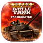
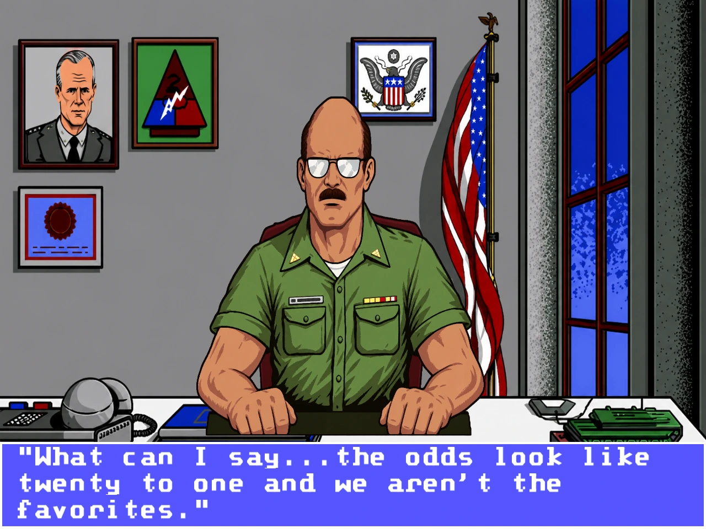
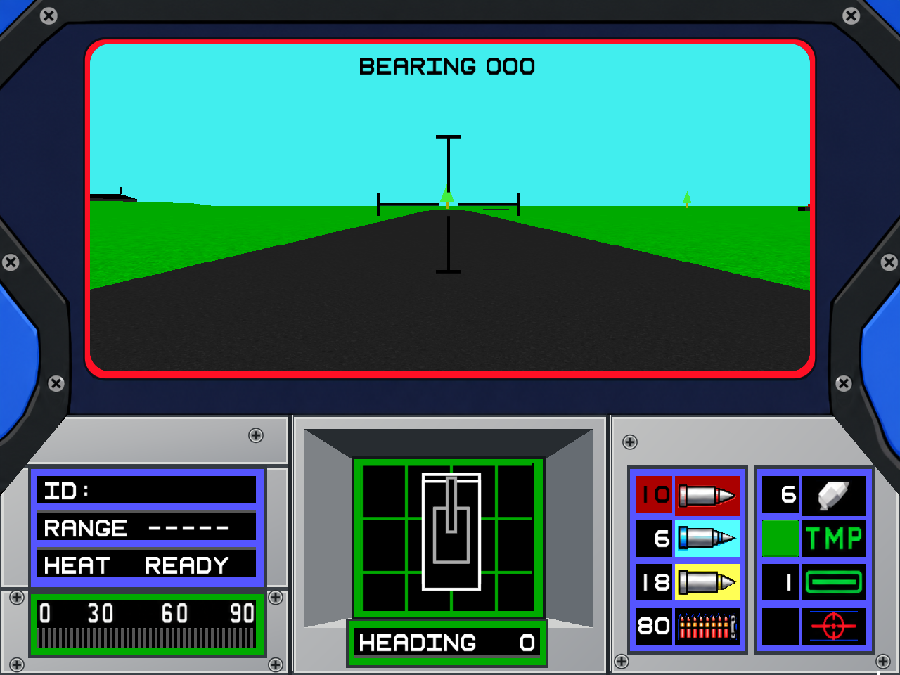
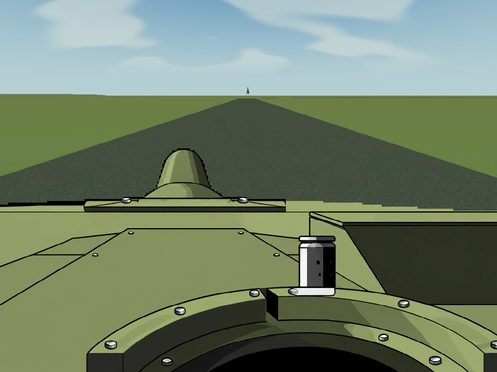
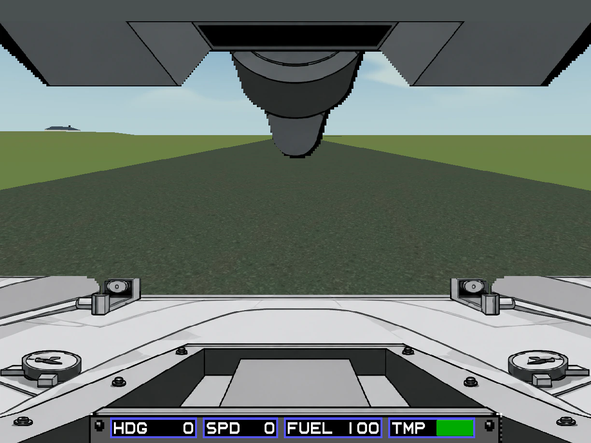
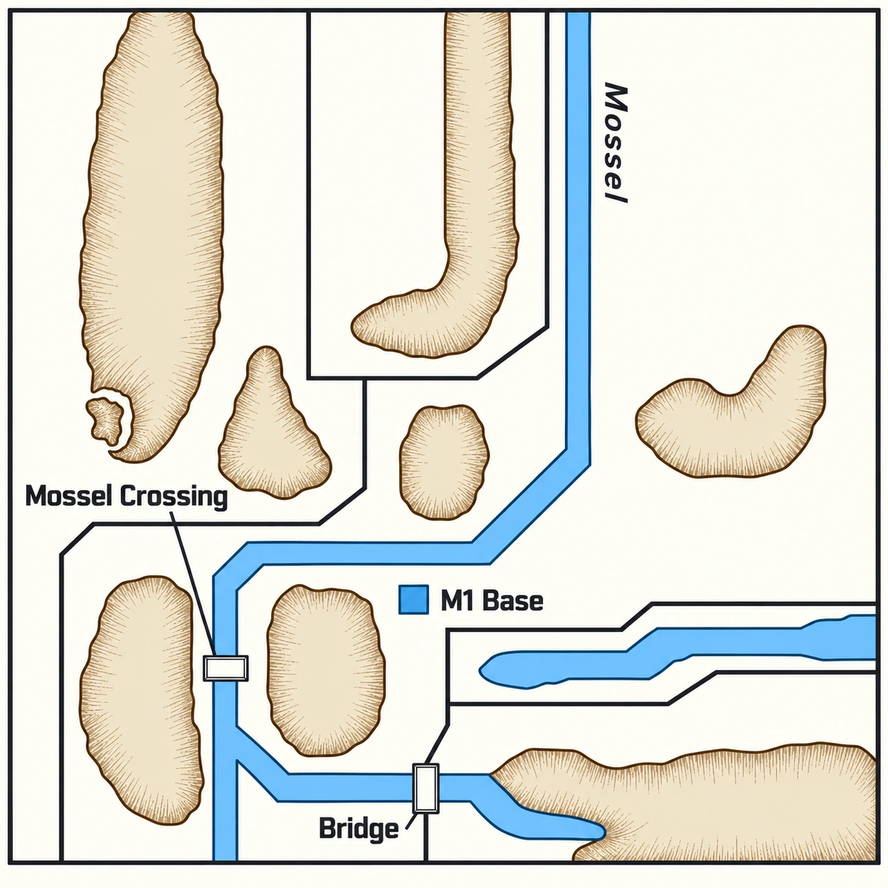
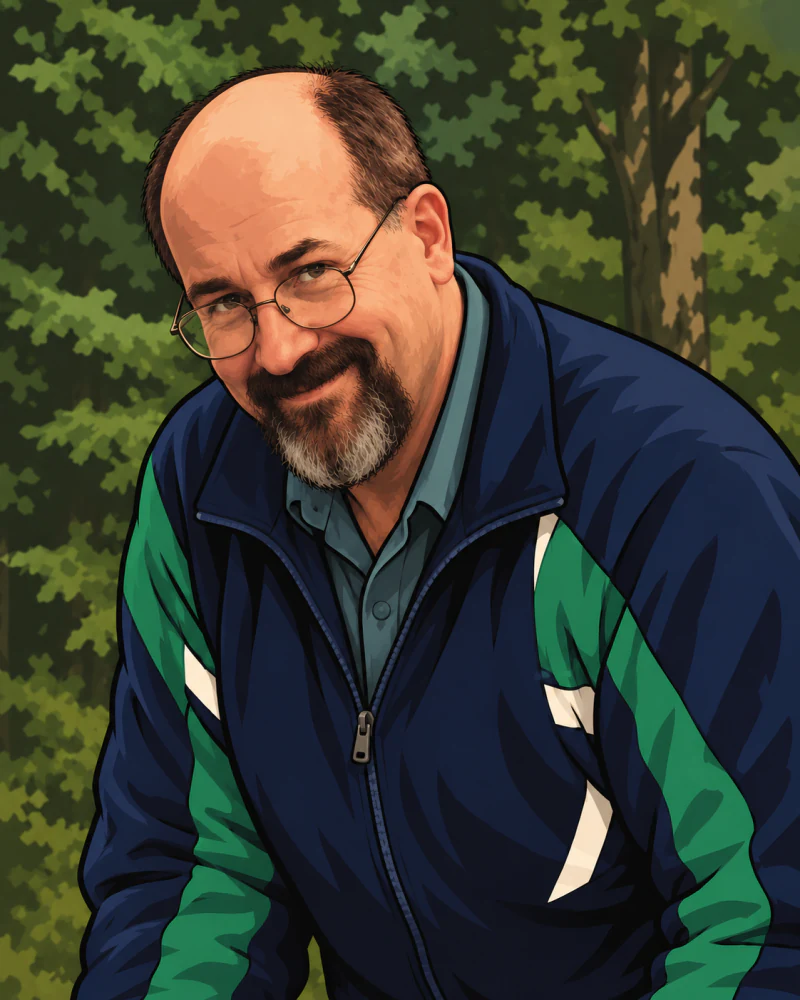

The Mossel Defense
Soviet forces have broken Allied defenses and approach the Mossel River in successive waves.
ObjectiveSurvive and destroy every attacking Soviet vehicle.

Abrams Fan RemasterBack in the commander’s seat.
Dynamix’s classic MS-DOS tank simulator, restored in high resolution. New artwork and audio. The original PC game at its heart.
Original game by Dynamix
Published by Electronic Arts
Requires your own copy of the original PC game.
Fan Remastered by Nell Watson

Watch the one-minute trailer. Restored crew, familiar instruments and a new view of the battlefield.
[Title card: Four crew, with portraits of the commander, gunner, loader and driver.] Four crew. One tank. Your command.
[The remastered title over an M1 at sunset.] Abrams Battle Tank by Dynamix was a revolution for its time. [On screen: Dynamix / Original PC, the original gunner station.] Now, it’s back! Scan the horizon, work the terrain, and hold your crew together when the shells start landing.
[Title card: A familiar world, restored. The Colonel’s office, Genesis → Modern.] Restored artwork. Reconstructed lettering. A choice of visual styles, including the one you first played.
[Title card: Every station, brought to life.] New sound effects and expressive crew voices bring every station to life. [Commander] T-72 destroyed. [Gunner] On the way! [Loader] Up! [Driver] Engine is overheating.
[The M1A1 Abrams, a Hind helicopter, a Sagger team and the US base compound, each shown as Original PC beside Modern graphics (experimental).] Underneath, the original game still calls every hit, every loss and every step of the campaign. On top, a tandem remaster in a new engine, linked directly to the old one, gives it a modern spit-shine.
[On screen: Save states / Quick load, then Checkpoint restored.] Save states mean one bad engagement no longer costs you the whole campaign. [On screen: Fast-forward, with 2×, 4× and 8× badges.] Fast-forward functions keep you engaged through the quiet parts.
[The remastered title over the M1.] The remaster is free and open. Just bring your own copy of the original PC game, then button up!
[End card: the remastered box art. Fan Remastered by Nell Watson. Free and open. Bring your own original PC game. Dedicated to the memory of David “Ming” Kenny. AbramsRemastered.com]
From the Colonel’s office to the gunner’s instruments, the artwork and lettering keep the character of the originals.

The remastered artwork in high resolution, with carefully rebuilt lettering. Upscaled is the game’s default graphics mode.
The original MS-DOS simulation runs in DOSBox Pure, in tandem with the Godot game engine. Missions, aiming, damage and vehicle behaviour remain with the PC game, while the remaster handles what you see and hear.
Switch graphics immediately during play, including the experimental Modern mode.
Restored crew portraits, gauges and ammunition displays, with an optional Modern battlefield built around the original geometry.



The original scenarios, redrawn from the manual with NATO-style symbols and clear lettering. The field guide pairs each one with terrain taken from the PC game itself.

The fan remaster is free. Bring your own supported copy of the original PC game. A Sega Genesis ROM is optional; neither is included.
macOSApple Silicon, macOS 14+
version 0.1.0-alpha.4
Signed and notarized by Apple
Windows & LinuxNative x86_64 portable apps
version 0.1.0-alpha.4
Linux needs a graphical desktop with working OpenGL
Extract the whole ZIP into a writable folder first; don’t run it from inside the archive. On macOS, move M1 Abrams Battle Tank Fan Remaster.app to Applications. On Windows, open M1 Abrams Battle Tank Fan Remaster.exe. On Linux, run M1 Abrams Battle Tank Fan Remaster.sh. Godot and Python are included.
Click Choose PC folder… and select the complete extracted game folder containing ABRAMS.COM, SIM.EXE and the other original files, not a ZIP. The importer checks every file and leaves your originals unchanged.
Click Add Genesis ROM… and choose the raw ROM, not a ZIP. It adds Genesis artwork and music; EGA, Upscaled and Modern work without it. The PC game is still required.
Click Play Abrams on macOS or Play on Windows and Linux. The original game supplies the simulation; the remaster supplies the presentation.
These are early test builds. Alpha 4 passes automated checks on every platform and the macOS app is notarized by Apple, but full mission playtesting continues, and Modern graphics are experimental.
Free and open source: the remaster’s own code is MIT-licensed. Open the GitHub repository or download the source ZIP.
DOSBox Pure source: macOS DOSBox Pure source Windows DOSBox Pure source Linux DOSBox Pure source
No. The remaster is free, but it runs your own copy of the original PC game, which isn’t included. A Sega Genesis ROM is optional and isn’t included either.
The importer checks every file against the one supported release and turns away other versions, changed files and partial folders. Choose the complete extracted game folder (all 68 original files), not a ZIP or the executables alone.
No. EGA, Upscaled and Modern work with the PC game alone. The supported raw ROM (not a ZIP) adds Genesis-mode artwork and music; it can’t replace the PC game.
The macOS app is signed and notarized by Apple, so it opens normally. The Windows build is unsigned, so Windows may ask you to approve it. Compare your download with the published checksums, and never turn off system-wide security. On Linux, if the launcher won’t start, restore execute permissions as the alpha 4 release notes describe.
Back up your Abrams profile and keep your previous alpha; save states load only in a compatible build.
No. It’s an unofficial, independent, non-commercial fan project; the original game’s rights remain with their holders.
Please report it on GitHub with your platform, the alpha number and the profile’s logs/ folder.
Original game by Dynamix.
Published by Electronic Arts.
Copyright 1988, 1989 Dynamix, Inc.
Fan Remastered by Nell Watson

Dedicated to the memory of